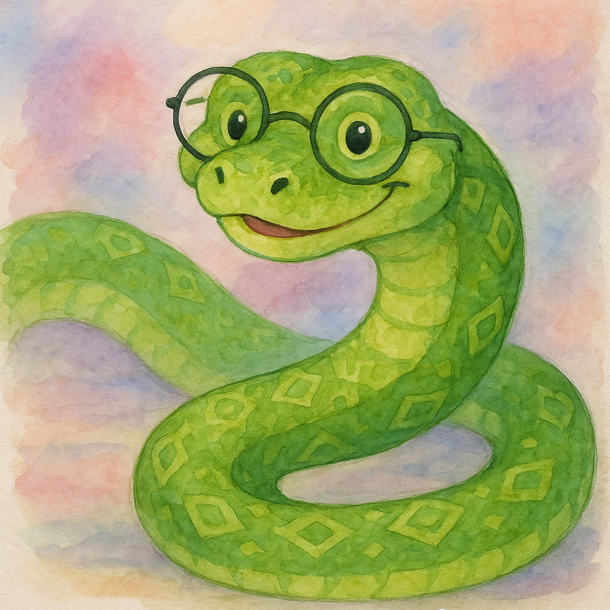

Authors Note: I am learning as I write this series so I might make mistakes, just post a comment with a correction if you find an error.
Introduction
Flow control is at the heart of every Python program. By deciding which pieces of code run and when they run, you can create dynamic, interactive applications that respond to user input and changing conditions. In this guide, we cover basic decision-making with conditional statements, looping with while and for constructs, and controlling loop behavior with break and continue. We also explain how to integrate modules like random and sys for practical examples such as guessing games and rock–paper–scissors.
No matter your skill set, the goa of this article is to walk you through each concept using clear explanations and simple, working examples.
Understanding Flow Control
Flow control tells a Python program when to execute particular pieces of code depending on conditions you set or the number of times you want that code to repeat. Instead of simply executing the program line by line, flow control lets you:
- Decide when to perform one action or another (using conditionals).
- Repeat blocks of code until a certain condition is met (using loops).
- Exit a loop early or skip specific iterations when needed.
This ability to adapt the program’s path makes your code more powerful and interactive, whether you’re greeting users, automating tasks, or even building a game.
Conditional Statements
Python’s decision-making begins with conditional statements. These are blocks of code that execute only if a condition is true.
Simple if Statement
An if statement evaluates a condition and, if true, executes the block that follows. For example, suppose you want to greet a user if they are named “Alice”:
name = input("What is your name? ")
if name == "Alice":
print("Hi, Alice!")In this case, if the condition name == "Alice" is met, the greeting is printed. Otherwise, nothing happens.
Using elif and else
Often, you’ll want to manage several potential outcomes. The elif (short for “else if”) statement helps by checking an additional condition after the primary if. An optional else block runs if none of the previous conditions were satisfied.
Consider this example that greets your user differently based on their name or age:
name = input("Enter your name: ")
age = int(input("Enter your age: "))
if name == "Alice":
print("Hi, Alice!")
elif age < 12:
print("Hello, young one!")
else:
print("Hello!")Here’s how it works:
- If the user’s name is “Alice,” the first block executes.
- If not, Python checks whether the age is less than 12.
- If neither condition is true, the
elseblock ensures a greeting is still delivered.
Note: Keep your conditions in a logical order. Once a condition evaluates to true, Python skips the rest of the checks.
Source insight: This pattern is the backbone of many beginner Python examples, where the order of if, elif, and else conditions ensures only one code path is executed.
Loops in Python
Loops help you execute a section of code repeatedly. There are two primary loops in Python: while loops and for loops.
The while Loop
A while loop repeatedly executes an indented block as long as its condition remains true. Imagine you want to print “Hello, world” five times:
counter = 0
while counter < 5:
print("Hello, world!")
counter += 1 # This increments the counter to eventually break the loopKey Points:
- Condition Checked First: The code inside the loop runs only if the condition is
True. - Infinite Loops: If you forget to update the condition (or deliberately use
while True:), the loop could run forever unless you break out of it with abreakstatement.
The for Loop and the range() Function
The for loop in Python is particularly useful when you know in advance how many times an action should run. The built-in range() function creates a sequence of numbers to loop over.
For example, printing numbers 0 through 4:
for i in range(5):
print("Number:", i)The range(5) function generates numbers from 0 up to 4 (five numbers), and with each iteration, the variable i takes on the next value.
You can also specify starting values and steps:
# Counting from 5 down to 0:
for i in range(5, -1, -1):
print(i)This loop counts down from 5 to 0 by decreasing the value of i each iteration. Such versatility makes the for loop ideal for many different tasks.
Source insight: The relationship between for loops and the range() function is illustrated well in beginner tutorials, showing how to control the loop counter both upward and downward .
Loop Control: break and continue
Sometimes you need to change the normal flow of a loop. Two keywords that help with this control are break and continue.
Breaking Out of a Loop
The break statement immediately terminates the loop. For instance, if you’re searching for a particular value, you might stop the loop once that value is found:
for i in range(10):
if i == 7:
print("Found 7, exiting the loop!")
break
print(i)In this code, when i equals 7, the break stops the loop from running further.
Skipping to the Next Iteration
The continue statement tells Python to skip the current iteration and resume with the next cycle of the loop. Here’s an example where even numbers are skipped:
for i in range(10):
if i % 2 == 0:
continue # Skip even numbers
print("Odd number:", i)When i is even, the continue statement prevents the print() function from running for that iteration.
Source insight: Tutorials emphasize that break and continue are essential when handling loops that need to exit early or skip undesired iterations, and they work inside both for and while loops .
Importing Modules for Extended Functionality
Python comes with a rich standard library that provides many built-in modules. Two common modules related to flow control are random and sys.
Using the random Module
The random module lets you generate random numbers. This is useful for games and simulations. For example:
import random
# Generate 5 random integers between 1 and 10.
for i in range(5):
print(random.randint(1, 10))Before using functions from a module like random, you must import that module with an import statement. You can also import specific functions using the from keyword, though using the module name (like random.randint()) can make your code easier to understand.
Exiting a Program with sys.exit()
Sometimes you want your program to terminate immediately. The sys module provides the sys.exit() function for this purpose:
import sys
while True:
response = input("Type 'exit' to shutdown the program: ")
if response.lower() == 'exit':
sys.exit() # This will end the program right here.
else:
print("You typed:", response)This loop continues asking the user for input until they type "exit", at which point sys.exit() stops the program.
Source insight: Detailed examples from online tutorials demonstrate how modules like random and sys empower your programs to make decisions and end gracefully when necessary .
Practical Examples
Let’s put these flow control concepts into practice with two classic programs.
Example 1: A Number Guessing Game
In this simple game, the computer picks a random number between 1 and 20, and the user must guess it. With each guess, the program gives feedback until the correct number is guessed or the maximum number of tries is reached.
# Guess the Number Game
import random
secretNumber = random.randint(1, 20)
print("I am thinking of a number between 1 and 20.")
# Give the player 6 chances to guess the number.
for guessesTaken in range(1, 7):
guess = int(input("Take a guess: "))
if guess < secretNumber:
print("Your guess is too low.")
elif guess > secretNumber:
print("Your guess is too high.")
else:
# Correct guess, break from loop.
break
if guess == secretNumber:
print("Good job! You guessed my number in " + str(guessesTaken) + " guesses!")
else:
print("Nope. The number I was thinking of was " + str(secretNumber) + ".")Explanation:
- The program picks a random number using
random.randint(1, 20).
- A
forloop gives the user six opportunities to guess.
- Conditional statements (
if,elif, andelse) check whether the guess is too high, too low, or correct.
- If the guess is correct, the
breakstatement exits the loop early.
- Finally, the program reports whether the user succeeded or failed.
Source insight: This example is a classic teaching tool found in many beginner guides to illustrate flow control, loop iteration, and condition checking ().
Example 2: Rock, Paper, Scissors
In this example, you’ll see how to combine loops, conditionals, random number generation, and loop control to create a simple rock–paper–scissors game:
# Rock, Paper, Scissors Game
import random, sys
print("ROCK, PAPER, SCISSORS")
# Variables to track wins, losses, and ties.
wins = 0
losses = 0
ties = 0
while True: # Main game loop.
print("\nScore: {} Wins, {} Losses, {} Ties".format(wins, losses, ties))
# Player input loop
while True:
print("Enter your move: (r)ock, (p)aper, (s)cissors, or (q)uit")
playerMove = input().lower()
if playerMove == 'q':
sys.exit() # Exit the program if player quits.
if playerMove in ('r', 'p', 's'):
break # Valid move has been entered; break out of the loop.
print("Please type one of r, p, s, or q.")
# Display player's move
if playerMove == 'r':
print("ROCK vs...")
elif playerMove == 'p':
print("PAPER vs...")
elif playerMove == 's':
print("SCISSORS vs...")
# Determine computer's move.
randomNumber = random.randint(1, 3)
if randomNumber == 1:
computerMove = 'r'
print("ROCK")
elif randomNumber == 2:
computerMove = 'p'
print("PAPER")
elif randomNumber == 3:
computerMove = 's'
print("SCISSORS")
# Compare moves and update scores.
if playerMove == computerMove:
print("It's a tie!")
ties += 1
elif (playerMove == 'r' and computerMove == 's') or \
(playerMove == 'p' and computerMove == 'r') or \
(playerMove == 's' and computerMove == 'p'):
print("You win!")
wins += 1
else:
print("You lose!")
losses += 1Explanation:
- The main game loop runs indefinitely until the user presses
qto quit. - A nested loop ensures the player inputs a valid move; if not, the loop uses
continueuntil the correct input is provided.
- Random numbers determine the computer’s move, and multiple
if/elifstatements print the corresponding choice.
- The game then decides the outcome and updates the score counters accordingly.
Source insight: This game demonstrates advanced flow control concepts like nested loops, multiple conditions, and immediate program termination using sys.exit() .
Your Turn!
Now it’s your turn to put what you’ve learned into practice! Try writing a short Python program that:
- Asks the user to enter a number.
- Uses a
forloop withrange()to print all the integers from 1 up to that number. - If the number is greater than 10, prints a message saying, “That’s a big number!”
Below is one way to solve it. Try to code it yourself before checking the solution.
See Solution
# Interactive Exercise Solution
# Ask the user to enter a number.
user_input = input("Enter a number: ")
# Convert input to integer.
number = int(user_input)
# Loop from 1 to the number (inclusive).
for i in range(1, number + 1):
print(i)
# Check if the number is greater than 10.
if number > 10:
print("That's a big number!")
else:
print("Good choice!")Key Takeaways
Flow Control Basics:
Flow control allows your Python program to make decisions (using conditionals) and repeat actions (using loops).Conditional Statements:
Useifto check conditions,eliffor additional conditions, andelsefor a default action.Loops:
- The
whileloop repeats as long as a condition is true. - The
forloop iterates over a sequence, often usingrange()to generate numbers.
- The
Loop Control Keywords:
breakexits a loop entirely.continueskips the current loop iteration and moves to the next.
Modules:
Import modules (likerandomandsys) to extend your program’s capabilities, such as generating random numbers or exiting the program early.
FAQs
What is flow control in Python?
Flow control defines the order in which statements are executed. It includes conditional statements, loops, and commands likebreakandcontinuethat modify the flow of execution.How does the
ifstatement work?
Anifstatement evaluates a condition; if it’s true, it executes the indented block of code. Otherwise, it may follow witheliforelseto handle other cases.When should I use a
whileloop vs. aforloop?
Use aforloop when you know exactly how many iterations you need, and awhileloop when the number of iterations depends on a condition that might change unpredictably.What happens if I forget to update the condition in a
whileloop?
The loop will become infinite, meaning it will run forever until it is manually stopped, which is why you should always ensure that the loop’s condition will eventually become false or include abreakstatement.Can I use
breakandcontinueoutside loops?
No, these keywords are meant for loop control. Using them outside a loop will result in a syntax error.
Conclusion
Flow control is an basic part of making Python programs smart and responsive. From decision-making with if and elif statements to iterating with while and for loops, these tools let you write programs that interact with users and adapt to changing data. With practice and experimentation, you’ll soon find these concepts second nature.
If you found this guide helpful, please leave a comment below or share your own Python projects on social media.
Happy Coding! 🚀

You can connect with me at any one of the below:
Telegram Channel here: https://t.me/steveondata
LinkedIn Network here: https://www.linkedin.com/in/spsanderson/
Mastadon Social here: https://mstdn.social/@stevensanderson
RStats Network here: https://rstats.me/@spsanderson
GitHub Network here: https://github.com/spsanderson
Bluesky Network here: https://bsky.app/profile/spsanderson.com
My Book: Extending Excel with Python and R here: https://packt.link/oTyZJ
You.com Referral Link: https://you.com/join/EHSLDTL6